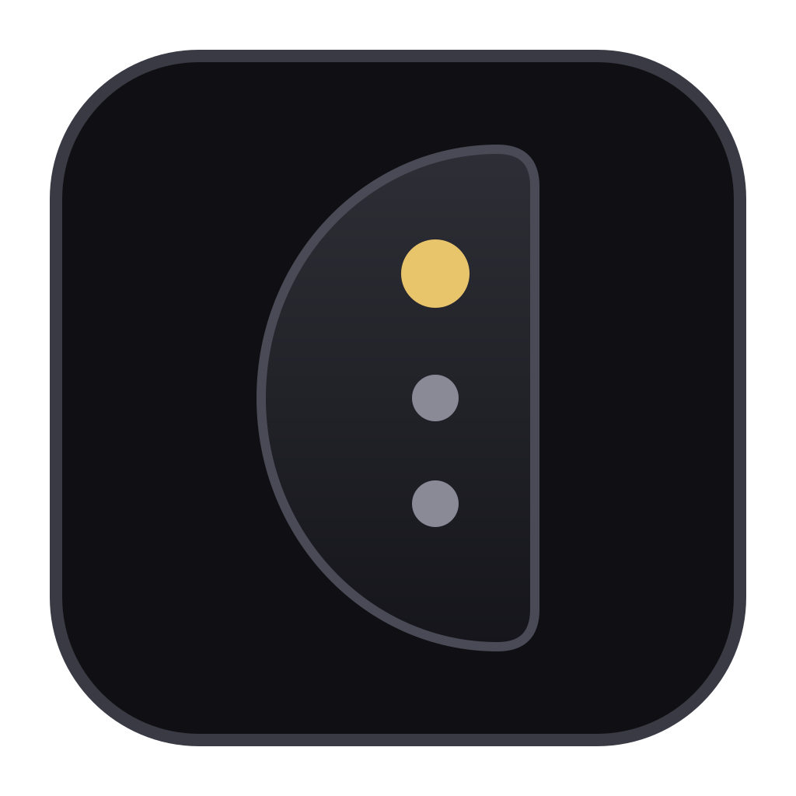

Always there, never in the way
A slim bar at the edge of your screen, above your other windows. Drag it anywhere on any monitor, or fold it into a small tab.

The token usage and cost of your AI coding agents, always in view.
Download Orbitbar Windows, macOS and LinuxOther formats:
Also for Windows · macOS · Linux
Orbitbar is a desktop app. Open this page on your Windows, Mac or Linux computer to download it.
Reads the session history that Claude Code, Codex and OpenCode already keep on your computer. Have only one of them? That works too.
A slim bar at the edge of your screen, above your other windows. Drag it anywhere on any monitor, or fold it into a small tab.
One click shows each agent's tokens and cost for today, the last 7 or 30 days, or this month, split by the project you worked on.
Everything stays on your computer. No account, no telemetry and no network calls: Orbitbar only reads files your agents already wrote.
Claude Code and Codex usage is priced at each provider's public API rates and marked as an estimate; OpenCode's own cost is shown as is. Add your own prices in one small file.
Add cells that open a page, start a program, or show a command's output right in the panel.
Switch themes from the bar's menu, start it with your computer, and keep every setting in one file.
Your system may warn you the first time, because the app is not code-signed yet. Here is what to do.
Orbitbar_…_x64-setup.exe.Prefer an MSI package? Pick the .msi under “Other formats”.
.dmg and drag Orbitbar to Applications.One download works on every Mac: Apple silicon (M1 or newer) and Intel.
chmod +x Orbitbar_*.AppImage../Orbitbar_*.AppImage..deb (Debian, Ubuntu) and .rpm (Fedora, openSUSE) packages install it for you.Orbitbar does not update itself yet: to update, close the bar and install the newest version from this page. Your settings are kept.